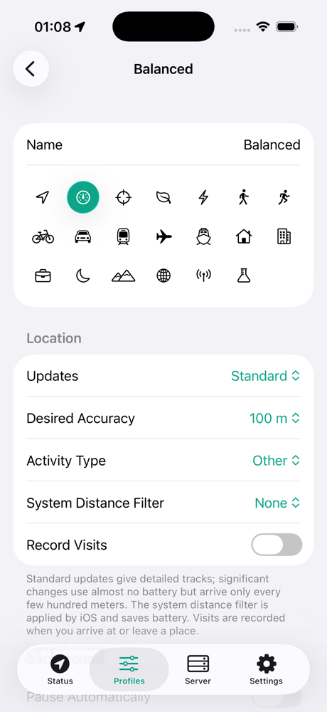

Profiles
A profile is a named set of capture, upload and payload settings, for example Balanced or Battery saver. You can switch profiles in the app, with Shortcuts, or from the server's response.
- UpdatesStandard, significant changes, or both
- AccuracyBest for navigation to 3 km
- PausingAutomatic, with a resume geofence
- VisitsArrivals and departures
